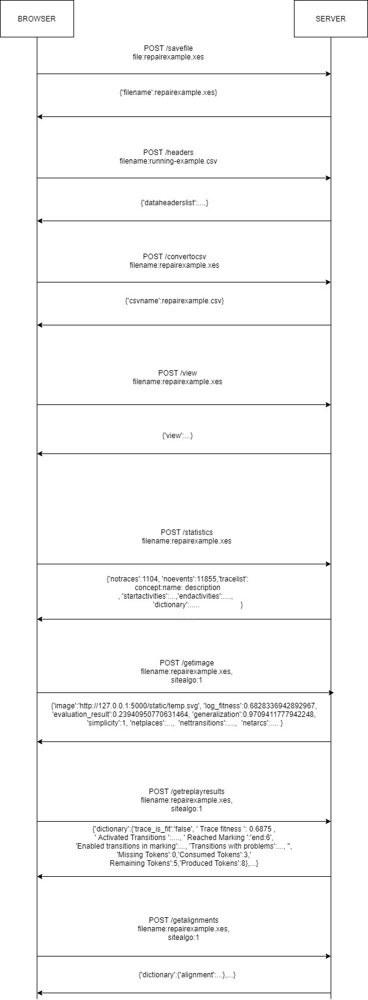
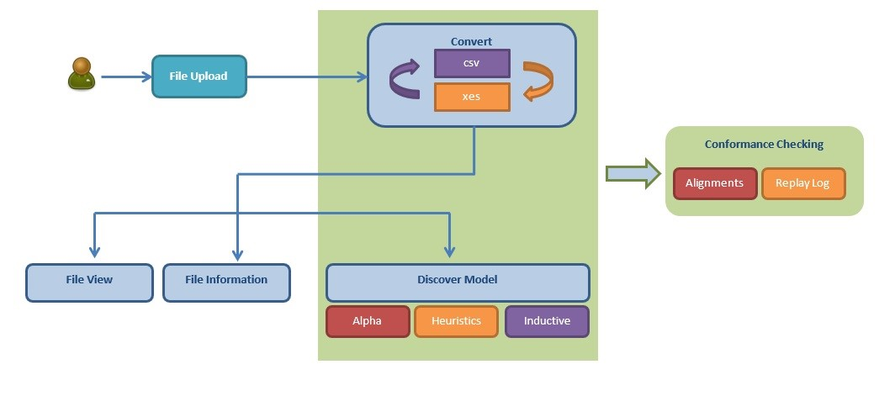

Introduction¶
For this project an API was developed so the user can get various data such as petri nets, event dictionaries and others on his browser with a GET method and also return this data to a website with a POST method. This master thesis API was developed in python because it is a powerful language for data analysis and provides many ready-made and useful libraries. For the development of this API flask was used (https://flask.palletsprojects.com/en/1.1.x/).
Flask is a micro web framework written in Python. It is classified as a microframework because it does not require particular tools or libraries. It has no database abstraction layer, form validation, or any other components where pre-existing third-party libraries provide common functions. However, Flask supports extensions that can add application features as if they were implemented in Flask itself. Extensions exist for object-relational mappers, form validation, upload handling, various open authentication technologies and several common framework related tools [11].
When we run flask web application with the command python API.py. A local IP address is return. In this case it is http://127.0.0.1:5000/. This IP is our endpoint. We can call this endpoint with two ways POST and GET.
Below there is an example of output when a user starts the API:
Serving Flask app “api” (lazy loading)
Environment: production
WARNING: This is a development server. Do not use it in a production deployment.
Use a production WSGI server instead.
Debug mode: on
Restarting with windowsapi reloader
Debugger is active!
Debugger PIN: 282-941-890
Running on http://127.0.0.1:5000/ (Press CTRL+C to quit)
Bellow there is a UML example of Web Interface communication with the API and a diagram for the web Interface.
 